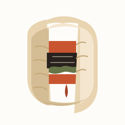
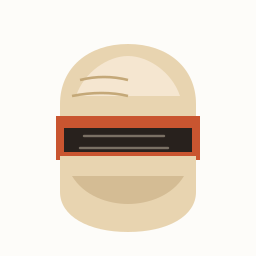
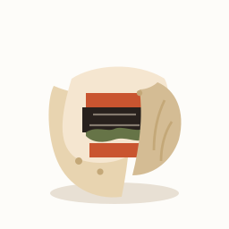
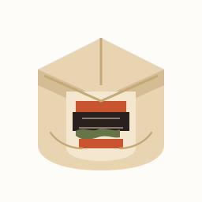

UTP: бургер в самса-тесте · разрез
C-003: куриный гибрид бургера × самсы в слоёном тесте.
Kill: голый треугольник-самса как лого; петух; KFC; 3 strips.
SVG ниже — рабочие варианты mark (Imagine в TUI сейчас отдаёт пейзажи — промпты для web Grok в design/prompts/utp-samsa-burger-pack.md).
Голос: ♥ CS-02 CS-07 · × CS-04
Mark 1:1 (SVG craft)

CS-01 crosscut
вертикальный разрез

CS-02 triangle open
оболочка самсы + бургер

CS-04 stack
просто слои 32px

CS-05 wedge
диагональный срез

CS-07 soft wrap
¾ открытый fold

CS-08 envelope
окно на начинку
Hero 2:1
Imagine TUI ненадёжен. Промпты H-01 / H-02 — в pack MD → web grok.com Imagine. После ♥ — кинь файл, соберём баннер.